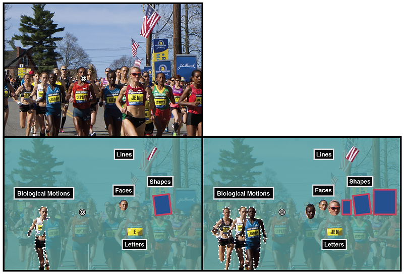

Organization
Our visual system is continuously confronted with an enormous amount of visual information: objects, faces, letters and simple features are constantly present in our visual field. This presents a fundamental limitation to object recognition throughout most of the visual field most of the time, known as visual crowding: objects that can be easily identified in isolation seem jumbled and indistinct in clutter (Whitney & Levi, 2011). Still, despite such a cluttered environment, our visual system is able to organize the world around us into a coherent percept. How do we achieve this? The Manassi lab, using crowding as a tool to investigate object perception, investigates how our visual system organizes all the visual input coming from cluttered scenes into a more global, organized representations.
Crowding was traditionally thought to be characterized by target-flanker interactions, which are (a) deleterious (e.g., pooling and substitution), (b) locally confined, (c) feature-specific and (d) restricted to low-level representations. We showed that none of these assumptions hold true:
Manassi et al. (2012, 2015); Doerig et al. (2020) — see also Sayim et al. (2010) and Hermens et al. (2008)
Manassi et al. (2013)
Manassi et al. (2016)
These results show that the spatial configuration across the entire visual field determines crowding, challenging most current models of crowding and object recognition (Bornet et al. 2021). Importantly, they highlight how crowding on a single element is determined by the perceptual organization in a scene, thus, making grouping a necessary component for any proposed crowding mechanism (Herzog et al. 2015a, 2015b; Schwetlick, 2025).
In cluttered scenes crowding happens at multiple levels of visual processing, from low level representations, like orientation and lines to high-level ones, like objects and faces (Marini et al. 2023). Importantly, crowding impairs the access we have to visual information at many levels, but it does not impair the representation of that information (Manassi & Whitney, 2018; Xia et al. 2020).
